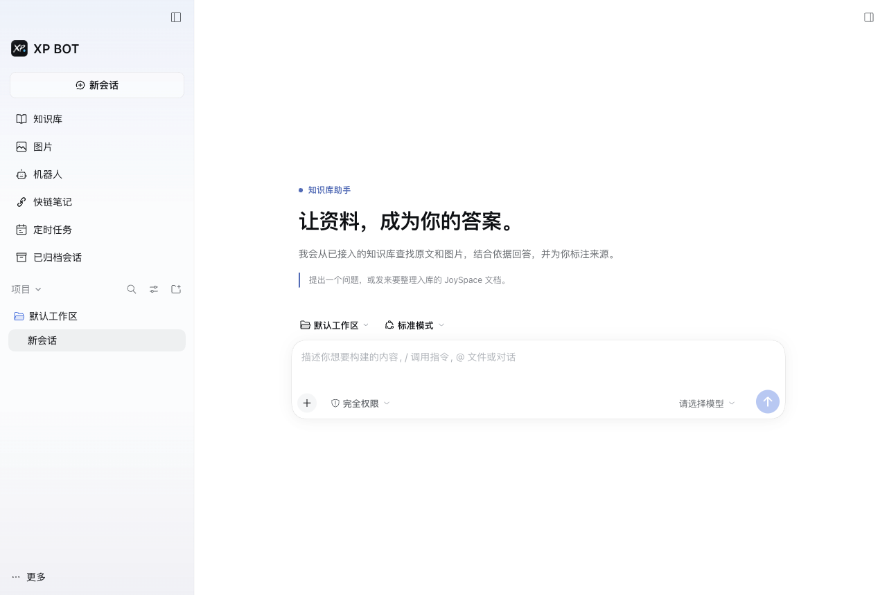
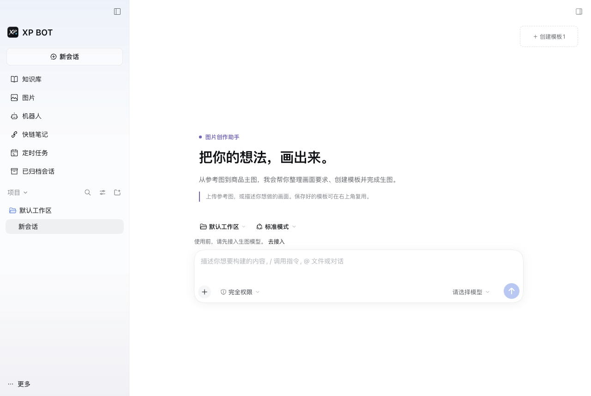
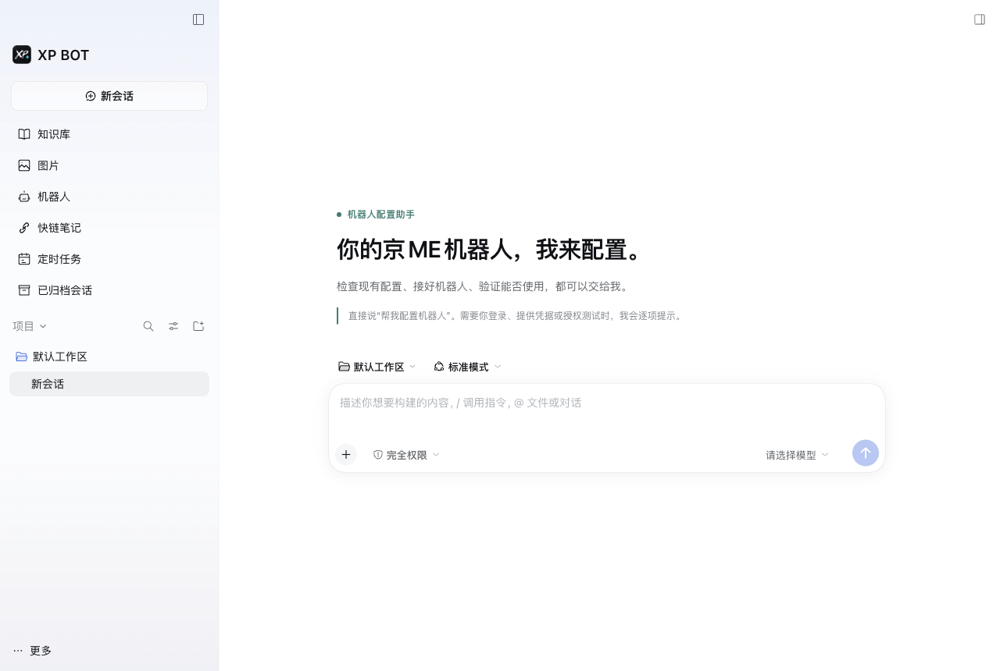
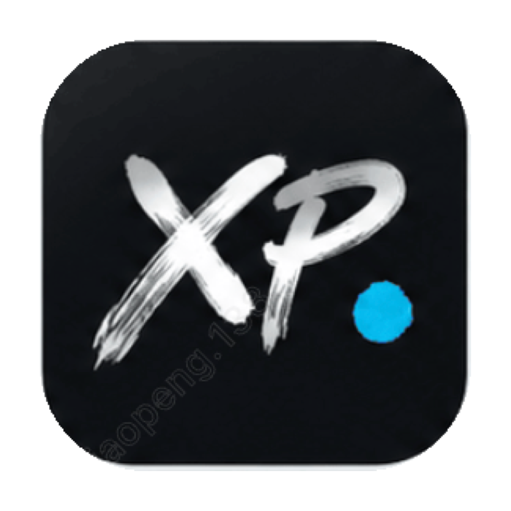

资料有出处。
答案有依据。
从已接入的知识库查找原文与图片，结合资料回答问题，并标注来源。读到答案，也能回到依据。
- 检索原文与图片
- 保留来源引用
- 在对话中继续追问
需先配置兼容的知识库服务。

为不同的想法，各展所长
找资料、做图片、配置机器人。
从专属助手开始，
把精力留给你真正想做的事。
从已接入的知识库查找原文与图片，结合资料回答问题，并标注来源。读到答案，也能回到依据。
需先配置兼容的知识库服务。
用文字描述画面，附上参考图，把满意的创作规则整理成模板。下次有新想法，沿着熟悉的风格继续。
需单独接入生图模型并具备相应权限。

把配置需求告诉助手，逐步检查现有设置、连接机器人、验证是否可用。需要登录或授权时，助手会提示你完成。
当前针对京 ME 机器人，需对应账号与权限。

从开始，到接着做
一个文件，一张图片，
一个继续执行的计划。
把工作的下一步，
放回看得见的地方。
生成的文件以可点击链接或文件卡片交付。图片留在会话里，查看和保存都有入口。
集中查看定时任务的周期与状态。关闭时保留计划和记录，需要时再确认开启。
用项目、置顶与归档整理对话，让不同工作的线索各有位置。
准备好，再出发
连接你有权使用的服务。
从最需要的一个助手开始。
在应用内填写自己的 API 配置，选择模型，测试连接后再保存进入。
按需配置知识库、生图服务或机器人。各项服务独立检查连接与权限。
打开对话，附上资料或参考图。从一个具体问题，推进到一个具体成果。

macOS · Apple Silicon
当前尚未开放公开下载。
安装包发布后，将在这里提供下载入口。
先了解，再开始
还不能。当前是 macOS Apple Silicon 本机开发版，尚未完成可在其他电脑安装使用的分发包。下载区会持续展示发布状态，安装包准备好后再开放入口。
需要。使用聊天能力前，请在应用设置中配置你有权使用的模型 API 并测试连接。图片生成还需要独立的生图服务与权限。服务可用性与费用以对应服务商为准。
需要先完成相应配置。知识库能力依赖已接入的兼容知识服务；当前机器人助手面向京 ME 机器人，需要对应账号、应用凭据及授权。进入助手界面不会自动发送消息。
XP BOT 是在 Mac 上运行的桌面客户端。模型请求、图片生成以及外部知识与机器人服务，仍需对应的网络连接；数据处理方式取决于你选择和配置的服务。
XP BOT 是基于 DeepSeek Harness 定制的独立桌面应用，保留其原生对话体验，并加入知识库、图片模板及工作管理等扩展。XP BOT 不是 DeepSeek 官方产品。